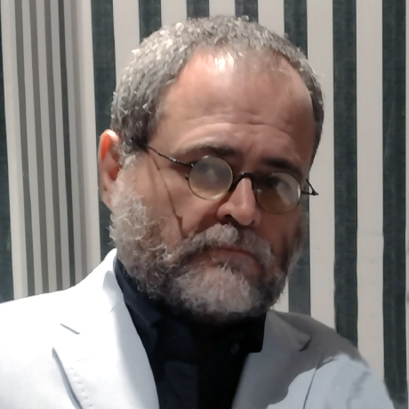

CURRICULU VITAE DE JOÃO ESTABILE
Nome completo:
João Baptista Estabile Neto

Sobre mim:
Sou mineiro não nascido em Minas mas criado em BH. Esdudei em nivel superior: Física, Desing Gráfico e Gestão pública. Atualmente, servidor público federal concursado
atuando como Designer Gráfico e fotógrafo. Também estudo música e tenho facilidade como compositor. Escrevo contos e posias, mas atér agora com somente um livro publicado.
Prefiro atividades criativas, inovadores e tenho perfil inevitavelmente multifuncional. Minha idade não faz nenhuma diferença e considero etarismo sequer perguntar a idade para fins
de avaliação profissional. Somente nutricionistas precisam perguntar a idade.
Formação Acadêmica
- Física - 1986 a 1990 - UFRJ - Concentração de estudos em filosofia e história da ciência;
- Design Gráfico - 2000 a 2005 - UEMG - Concentração de esdutos em diagramção de livros e tipografia;
- Gestão Pública - 2012 a 2016 - UFMG = Concentração de estudos em filolosifa política;
- fotografia - 1994 - SENAC RJ - Fotografia, revelação de filme PB e estúdio fotográfico.
Experiência Profissional:
- Diretoria de Saúde da Marinha - 1994 a 1996 - Estatística hospitalar;
- Fundação Oswaldo Cruz - 1999 - atual - Design Gráfico, Webdesing e Fotografia;
- Freelancer em fotografia e Design Gráfico.
Soft-Skills:
- Criatividade;
- Cultura geral;
- multifuncional;
- Inovador;
- Engajado;
Cursos e Aprimoramentos:
- Várias participações em congressos de história da ciência;
- Cursos de ProgramAção: FORTRAN, BASIC e Atualmente, PYTHON;
- Cursando música profisionalizante na modalidade Violão;
- Em linguas: Inglés intermediário e noões básicas em Italiano, Esperançto e LIBRAS.